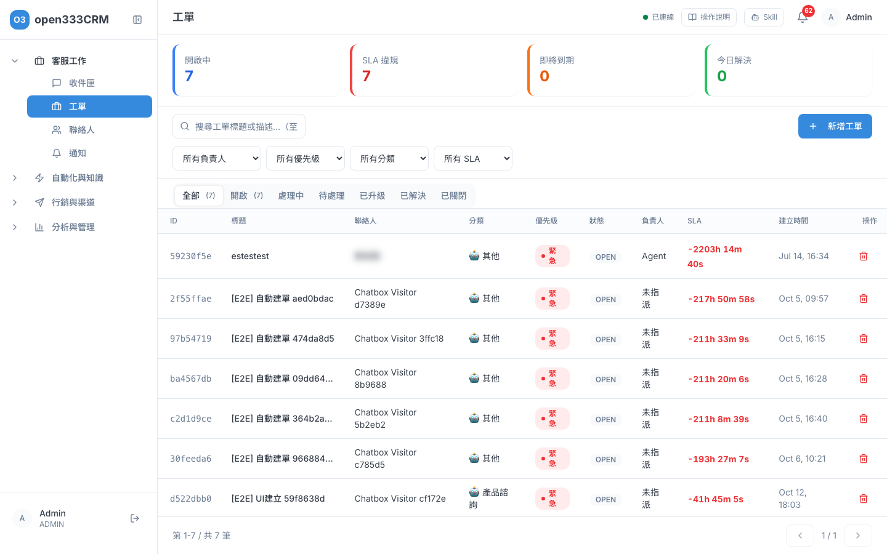
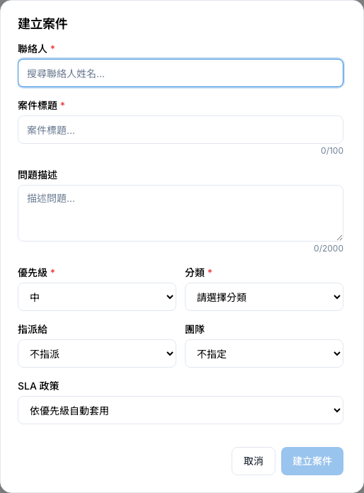
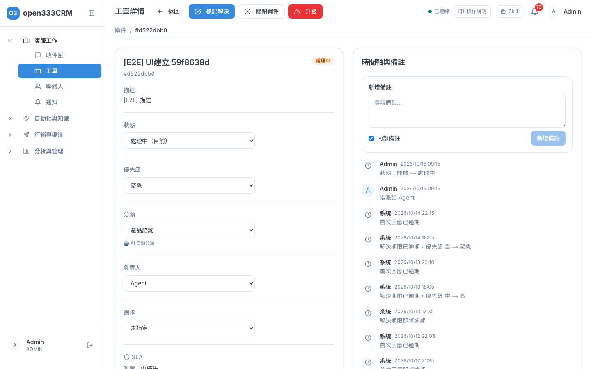
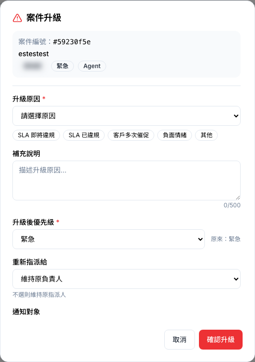

CHAPTER 02 · 客服工作
工單
一次回覆解決不了的問題，就開成工單。誰負責、處理到哪、還剩多少時間，全都記在同一張單上，交接也不怕漏。
1 這頁能做什麼
工單（畫面上有些地方也叫「案件」，意思一樣）用來追蹤需要多花時間處理的問題，例如維修、退換貨、等廠商回覆。從左側選單「客服工作 → 工單」進入。
看工單列表統計卡、搜尋、篩選、狀態分頁
新增工單選聯絡人、填標題與分類
工單詳情改狀態、優先級、負責人
推進狀態處理中、標記解決、關閉、重新開啟
升級處理不了時交給主管
內部備註寫下進度，同事一看就懂
ℹ️
大部分工單是從收件匣的對話開的，顧客與對話會自動帶入，見「01 · 收件匣 → 從對話建立工單」。
2 工單列表與篩選
列表依 SLA 到期時間排序，越快到期的排越上面，先處理最急的就對了。

統計卡
| 卡片 | 意思 |
|---|---|
| 開啟中 | 還沒處理完的工單數 |
| SLA 違規 | 已經超過處理時限的工單數 |
| 即將到期 | 30 分鐘內就要到期的工單數 |
| 今日解決 | 今天已經解決的工單數 |
找工單
- 在「搜尋工單標題或描述...」輸入至少 2 個字。
- 用四個下拉選單縮小範圍：「所有負責人」「所有優先級」「所有分類」「所有 SLA」。
- 點狀態分頁：「全部」「開啟」「處理中」「待處理」「已升級」「已解決」「已關閉」。分頁旁的數字是該狀態的工單數。
- 點任一列，進入工單詳情。
ℹ️
搜尋只會找目前這一頁的 20 筆。工單很多時，請先用下拉或狀態分頁縮小範圍再搜尋。另外，「所有 SLA」選「正常」目前不會過濾，結果和「所有 SLA」一樣。
表格欄位
| 欄位 | 說明 |
|---|---|
| ID | 工單編號的前 8 碼，跟同事溝通時可以報這個 |
| 標題、聯絡人、分類 | 工單在處理什麼、是哪位顧客 |
| 優先級 | 緊急（紅）、高、中、低 |
| 狀態 | 目前處理到哪一步，對照見下表 |
| 負責人 | 負責的客服；沒有指派時顯示「未指派」 |
| SLA | 離處理時限還剩多久。顯示負數（例如 -2h 10m）表示已經逾時 |
| 建立時間 | 工單開立的時間 |
「狀態」欄目前顯示英文代碼，對照如下：
| 畫面上看到 | 意思 |
|---|---|
| OPEN | 開啟：剛建立，還沒開始處理 |
| IN_PROGRESS | 處理中 |
| PENDING | 待處理：在等顧客或其他人回覆 |
| ESCALATED | 已升級：交給主管處理 |
| RESOLVED | 已解決 |
| CLOSED | 已關閉 |
ℹ️
分類前面的小機器人圖示，不一定代表是 AI 分的，人工選的分類也會顯示。
3 新增工單
不是從對話來的問題（例如顧客打電話來），可以在列表頁直接開工單。
- 按右上角「新增工單」，跳出「建立案件」。
- 在「聯絡人」輸入至少 2 個字，從下拉名單點選顧客。
- 填「案件標題」，選「分類」。
- 其他欄位視需要填寫，按「建立案件」。系統會直接帶你到這張工單的頁面。

| 欄位 | 必填 | 說明 |
|---|---|---|
| 聯絡人 | 是 | 這張工單是哪位顧客的。輸入名字搜尋後點選 |
| 案件標題 | 是 | 一句話說明問題，100 字以內 |
| 問題描述 | 詳細情況，2000 字以內 | |
| 優先級 | 是 | 低、中、高、緊急，預設「中」。會影響處理時限 |
| 分類 | 是 | 產品諮詢、訂單問題、退換貨、帳號問題、技術支援、投訴建議、付款問題、物流配送、其他 |
| 指派給 | 交給哪位客服。先不指派也可以 | |
| 團隊 | 選了負責客服後會自動帶入，通常不用動 | |
| SLA 政策 | 處理時限的規則。留著「依優先級自動套用」就好 |
⚠️
顧客如果是從 LINE、Facebook 等渠道聯繫的，請從收件匣那筆對話開工單，不要在這裡開。在這裡開的工單會被歸到系統裡的第一個渠道，不一定是顧客實際用的渠道，可能讓負責那個渠道的同事看不到這張單。
ℹ️
找不到聯絡人時，名單上會出現「建立新聯絡人」，但這個入口目前沒辦法用。請先確認顧客的名字拼法，或請顧客先透過任一渠道傳一則訊息，系統就會自動建立聯絡人。
ℹ️
「建立案件」按鈕是灰色按不下去時，表示還有必填欄位沒填（聯絡人、標題或分類）。
4 工單詳情
點列表任一列進入詳情。左邊是工單資料，可以直接修改；右邊是時間軸與備註。

| 欄位 | 怎麼改 |
|---|---|
| 標題 | 點標題就能改，按 Enter 或點旁邊空白處儲存，按 Esc 放棄 |
| 狀態 | 下拉只會列出現在可以改成的狀態，見第 5 節 |
| 優先級、分類 | 選了就自動儲存 |
| 負責人 | 選了就自動儲存。工單還是「開啟」時，指派負責人會自動變成「處理中」 |
| 團隊 | 通常不用動 |
| SLA | 顯示套用的政策、首次回應有沒有達標、解決時限與倒數 |
| 關聯對話 | 按「查看對話」回到收件匣的那筆對話 |
| 案件標籤 | 替工單貼標籤，方便日後分類統計 |
| 聯絡人 | 顧客資料，可以點進聯絡人頁 |
ℹ️
欄位存檔成功不會跳提示，畫面直接更新就代表存好了。改負責人之後重新整理，名字又變回原本的，表示沒有存成功，通常是帳號沒有「指派工單」權限，請找管理員。問題描述目前只能看、不能改，要補充請寫在備註。
5 推進工單狀態
一張工單通常這樣走：開啟 → 處理中 → 已解決 → 已關閉。中途要等顧客回覆，可以先改成「待處理」。
- 開始處理：在左邊「負責人」選定處理的人，工單會自動變成「處理中」。已經有負責人的工單，就從「狀態」下拉改成「處理中」。
- 解決了：按右上角「標記解決」。
- 結束：按右上角「關閉案件」。
- 又有問題：已關閉的工單，右上角會出現「重新開啟」。
⚠️
剛建立、還是「開啟」的工單，請先照第 1 步改成「處理中」，再按「標記解決」。直接按會跳出英文錯誤訊息，工單不會變更。「待處理」和「已升級」的工單也一樣，要先改回「處理中」才能標記解決。
⚠️
要把工單改成「已解決」「已關閉」或「已升級」時，請用右上角的按鈕，不要用左邊的「狀態」下拉。用下拉改不會留下時間軸紀錄，也不會寄滿意度調查給顧客、不會通知主管。
ℹ️
右上角「關閉案件」按下就直接關閉，不會再確認。
6 升級工單
自己處理不了、顧客一直催、或快超過時限時，把工單「升級」給主管。
- 確認工單是「處理中」或「待處理」（「開啟」的工單請先照第 5 節改成處理中）。
- 按右上角紅色「升級」，跳出「案件升級」。
- 選「升級原因」（必填），可以直接點下方的快選按鈕，例如「客戶多次催促」。
- 需要的話寫「補充說明」（500 字以內）。
- 確認「升級後優先級」，預設會比現在高一級。
- 要換人處理就選「重新指派給」，不換就留「維持原負責人」。
- 勾選「通知對象」（預設兩個都勾），按「確認升級」。

ℹ️
「Supervisor（主管）」會通知所有主管和管理員；你自己按升級不會收到通知。重新指派的新負責人目前不會收到通知，請另外告訴他。兩個通知對象都取消勾選的話，就沒有人會收到通知。
7 時間軸與內部備註
右邊的「時間軸與備註」由新到舊列出這張工單發生過的事：誰指派、改了什麼狀態、什麼時候升級。處理進度寫成備註，交接時同事一看就懂。
- 在「新增備註」的「撰寫備註...」輸入內容，最多 5000 字。
- 「內部備註」預設是勾選的，保持勾選即可。
- 按「新增備註」，備註會出現在時間軸最上面。
ℹ️
所有備註都只在後台看得到，不會傳給顧客。勾「內部備註」只是在備註上多一個「內部」標記。備註的作者目前都顯示為「Agent」，需要的話請在內容裡寫上你的名字。
ℹ️
時間軸上的「sla_breached」表示工單超過解決時限，「first_response_breached」表示超過首次回應時限，這兩種是系統自動寫入的提醒。
8 SLA 時限
SLA 是「這種問題最晚多久要處理完」的承諾。建立工單時，系統會依優先級套用對應的時限，列表和詳情頁都會倒數。
| 看到什麼 | 代表 |
|---|---|
| 正常顏色的倒數 | 時間還夠 |
| 橘色 | 剩不到 2 小時 |
| 紅色、負數 | 已經超過時限 |
| 「無 SLA」 | 這張工單沒有套用時限 |
ℹ️
統計卡和篩選的「即將到期」，算的是 30 分鐘內到期的工單。工單建立後再改優先級，時限不會重算。SLA 規則由管理員在「設定 → SLA」調整，見「17 · 其他設定」。
9 刪除工單
開錯或重複的工單可以刪除。在列表最右邊「操作」欄按垃圾桶圖示，瀏覽器會問「確定要刪除此工單…嗎？」，按確定就刪除。
⚠️
刪除是永久的，沒辦法復原，工單的時間軸與備註也會一起消失。只是處理完的工單請用「關閉案件」，不要刪除。看到「刪除工單失敗」，通常是你的帳號沒有刪除權限。